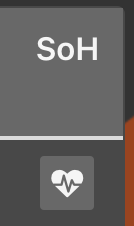
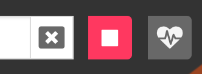
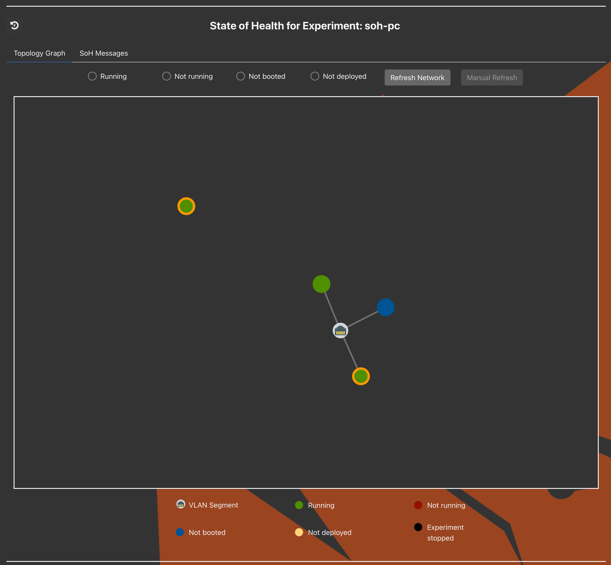
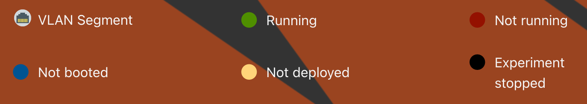
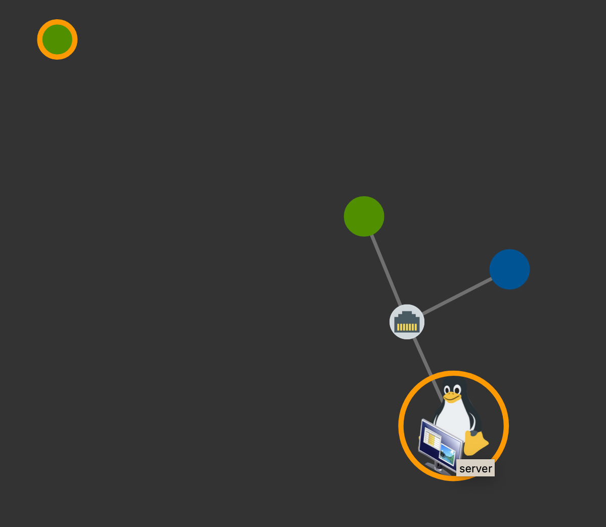
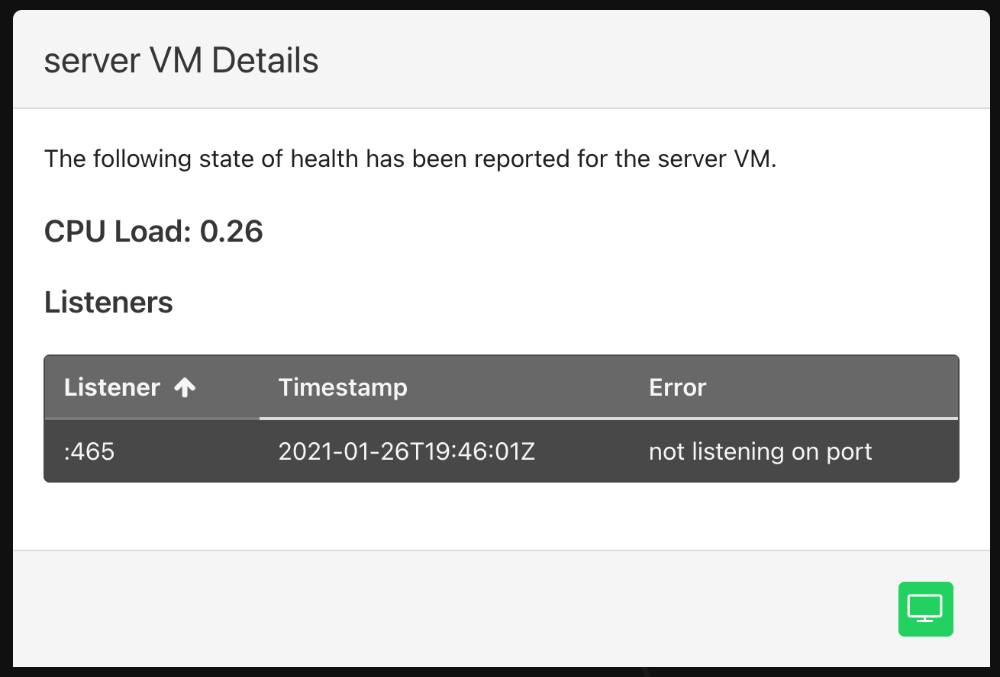
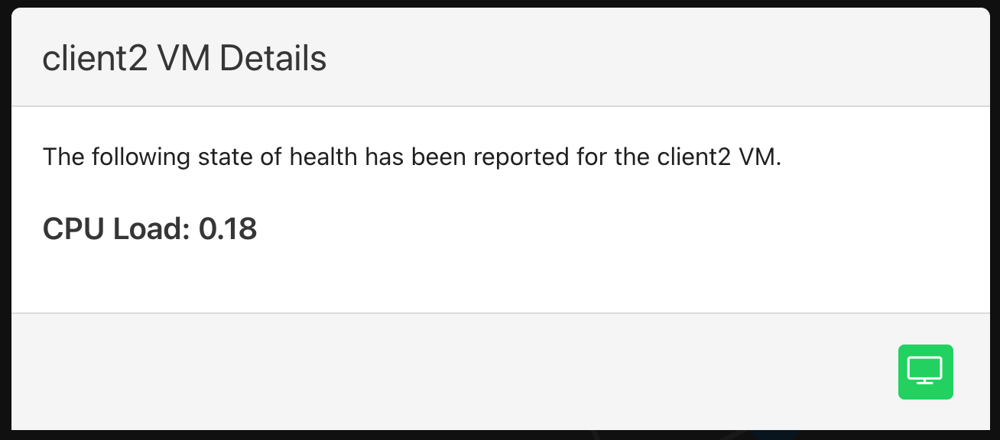
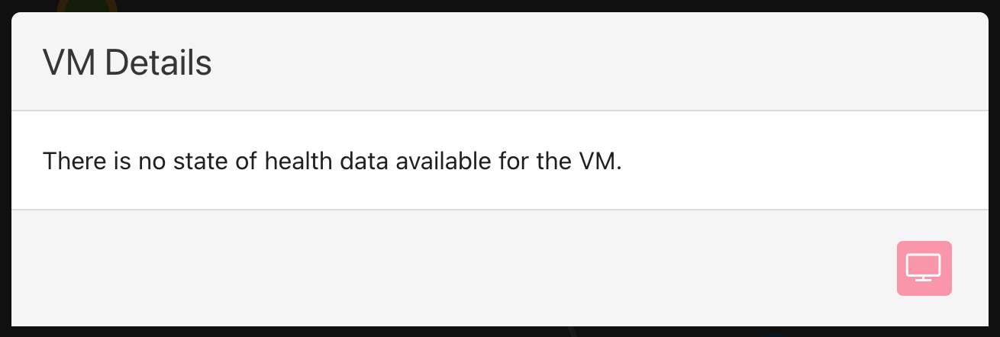
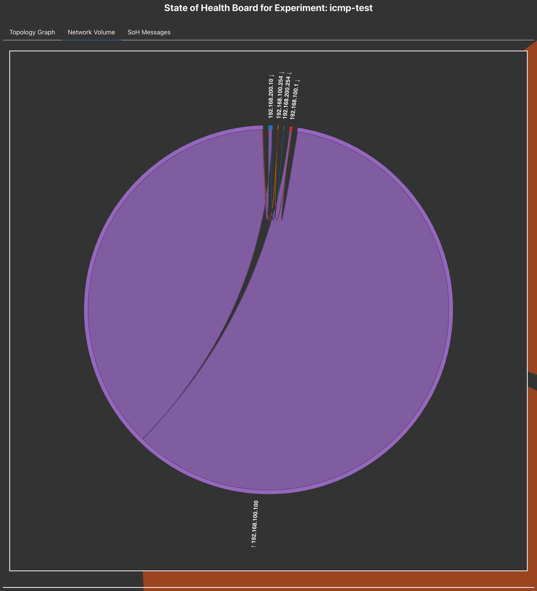
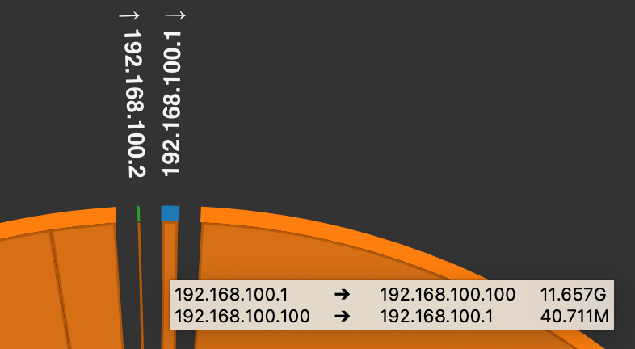

State of Health¶
State of Health (SoH) is a core (but not default) app meant to assist with
understanding the state of a running experiment. It has many configuration options, and relies on minimega's command and control
infrastructure (ie. the miniccc agent running in experiment VMs) to drive and
collect the experiment health state data. See the command and control section for more details.
User Interface¶
SoH information is presented in the UI in three separate tabs. You can access the information by clicking the SoH button from the Experiments or Running Experiment components.
Button available on the experiments table.

Button available in running experiment.

Topology Graph¶
This tab displays a network graph of the running experiment.

The color of the node is based on the condition of the corresponding VM and could be:
RunningNot running(part of the experiment, but currently paused)Not booted(part of the experiment, but marked as Do Not Boot)Not deployed(part of the experiment, but flushed from minimega)External(an external node, i.e. hardware in the loop, not deployed by minimega)Experiment stopped

It is also possible to filter the graph based on nodes that are either:
Running,Not runningNot bootedNot deployed
Warning
There is no filter option for External nodes. Applying any of the filters
above will hide external nodes from the graph, since they don't match any
of the filterable statuses. Use Refresh Network to clear the filter and
see external nodes again.
The Refresh Network button will reset the filter, showing all nodes.
The Manual Refresh button will request the latest server-side SoH data and
update the three tabs.
Hovering over a node in the graph will cause it to expand to show what operating system the node is running. An orange border around a node is indicative of the node currently having health issues (e.g., expected files, services, or processes are missing, or the node cannot reach other nodes on the network). Other virtual systems will also be represented accordingly (e.g., a printer or firewall).

Clicking on the node with an orange border will produce a details modal with the current error reporting.

If there are no errors to report and command and control is enabled, the details modal will only show the current CPU load.

Note the green button in the lower right corner of the modal; this will provide access to the VNC for any running VM. When the VM is not running, access to the VNC will be disabled. Finally, if there is no SoH information to report on a given VM, it will be noted in the details modal. The following screenshot is an example of no SoH information with the VNC button disabled.

External Devices¶
Experiments that include hardware-in-the-loop or other devices not deployed by
minimega can still represent them in the topology graph by adding them to the
topology as external nodes (external:
true). External nodes show up in the graph with the External status color
(see the legend above) and, when hovered, still show which OS type/icon was
configured for them.
Because external nodes don't run miniccc, they're excluded from the
automated command-and-control-based checks described in Command and
Control (network config, reachability, listening ports,
processes, Docker containers, CPU load). Clicking on an external node's details modal will
therefore always report no SoH information available, and the VNC button will
be disabled since phenix has no console access to it.
External nodes can still participate in reachability testing indirectly: their
IP address(es) are read from the topology configuration, so they can be used as
the src or dst in a
testCustomReachability entry to verify connectivity
to/from the device from another VM in the experiment.
Getting a line to draw to an external device
The topology graph only draws a line between two nodes when they share a
common VLAN name on one of their network interfaces (the VLAN name becomes
the shared switch node in the graph). To connect an external node to the
rest of the topology in the graph, give it a network.interfaces[].vlan
value that matches the VLAN used by the node(s) you want it connected to.
Interfaces on the MGMT or MIRROR VLANs are always ignored when drawing
these lines (for both external and internal nodes), and an external node
with no vlan set on its interface(s) will appear in the graph as an
isolated node with no connecting lines.
Network Volume¶
This tab displays a chord graph that shows network flows between nodes using flows from Packetbeat fed to Elasticsearch; connections represent the volume of traffic between nodes.
Tip
This information is only available if the packet capture option is enabled for SoH.
This is an example chord graph of a Protonuke server with two clients; one of which is requesting content at a delayed interval (therefore less traffic flow).

If you hover over traffic flow, a tooltip will appear providing additional
details. (In this screenshot, the mouse is hovering over the traffic for IP
192.168.100.1.)

Configuration Options¶
-
disabled: Like any (non-default) phenix app,sohcan be disabled at startup by settingdisabled: true. In this case, health checks will not be run at experiment startup but can be triggered manually after the experiment is running through either thephenixcli or web UI -
appMetadataProfileKey: since the listeners and processes one might want to monitor could be highly dependent on other apps that are configured for an experiment, it's possible to specify thehostListenersandhostProcessesto be monitored in the other apps themselves under the key specified here. The default key issohProfile. -
c2Timeout: a Golang duration string specifying how long to wait for theminicccC2 client to become active in a VM before moving on and marking the VM as not to be monitored. The default is5m. -
exitOnError: a boolean representing whether the app should cause the entire experiment deployment to fail if it has any errors. The default isfalse. -
startupDelay: a Golang duration string specifying how long to wait before initiating checks at the experiment starts. This can be useful when some processes are not healthy immediately at experiment start. This only delays SoH when it first runs at the experiment start. It will not delay SoH when run manually later by clicking the 'Run SoH' button in the UI or using the command linetrigger-runningcommand. The default is no delay. -
hostCustomTests: If present, a map of custom tests to run on the given hosts. -
name: name of test. Used as script name to be sent to the host. -
testScript: the actual script (can be multiple lines) to be executed using the specifiedexecutor. -
executor: the application to execute thetestScriptwith (e.g.bash,powershell). -
testStdout: a string to look for in STDOUT from the executed script. If found, the test passes. If not found, it fails. -
testStderr: a string to look for in STDERR from the executed script. If found, the test passes. If not found, it fails. -
validateStdout: a script to run that will be provided, via STDIN, the STDOUT from the executed script. If this validation script exits 0, the test passes. If it exits non-zero, the test fails. This validation script should always be a bash script, even if the host is a Windows host. -
validateStderr: a script to run that will be provided, via STDIN, the STDERR from the executed script. If this validation script exits 0, the test passes. If it exits non-zero, the test fails. This validation script should always be a bash script, even if the host is a Windows host. -
hostFiles: a map of VMs, each specifying a list of file paths that should exist within the VM. Paths may target Linux or Windows VMs. Missing files are reported in the node's Files table in the SoH details modal and mark the node as unhealthy. The default isnil. -
hostServices: a map of VMs, each specifying a list of service names that should be running within the VM. Linux VMs are checked viasystemctl, and Windows VMs are checked viaGet-Service. Services that aren't active are reported in the node's Services table in the SoH details modal and mark the node as unhealthy. The default isnil. -
dockerContainers: a map of VMs, each specifying a list of Docker container names/IDs that should be up and healthy within the VM. For each container, if it has a Docker healthcheck configured, its health status (healthy,unhealthy, orstarting) is used to determine node health; otherwise, the container simply being in therunningstate is considered healthy. Requires thedockerCLI to be available on the VM (Linux or Windows) and the VM'sminicccuser to have permission to run it. Results are reported in the node's Docker Containers table in the SoH details modal and mark the node as unhealthy if a container is missing, not running, or unhealthy. The default isnil. -
hostListeners: a map of VMs, each specifying a list of listening ports to check for within the VM. If the port can be listening on any interface, the form:80can be used. If the port should be listening on a specific interface, the form192.168.1.10:80can be used. The default isnil. -
hostProcesses: a map of VMs, each specifying a list of process names to check for within the VM. The default isnil. -
hostsToUseUUIDForC2Active: a list of topology hostnames to use the minimega VM UUID for when determining if their cc agent is active. This is useful for topology nodes that are configured with snapshots disabled, preventing their hostname from getting updated when booted. Note that this configuration option also supports being set toall(e.g.,hostsToUseUUIDForC2Active: all) if a user wishes to use the minimega VM UUID for all topology nodes. -
injectICMPAllow: a boolean representing whether any existing firewall/router rulesets should have a rule added to allow ICMP between all nodes to facilitate reachability testing. See Injecting ICMP Rules for more details. If reachability tests are disabled, then this will be too, regardless of its setting here. The default isfalse. -
packetCapture: if present, a partially hidden packet capture infrastructure based on Elasticsearch, Kibana, and Packetbeat will be deployed for the experiment. See Packet Capture for more details. The default isnil. -
elasticImage: path to the disk image to use for the Elastic/Kibana VM for packet capture. Animage/PHENIX-elasticsearchconfig comes bundled with phenix and can be used to build an image to use here. There is no default for this setting; if packet capture is to be deployed it must be provided. -
packetBeatImage: path to the disk image to use for the Packetbeat VM for packet capture. Animage/PHENIX-packetbeatconfig comes bundled with phenix and can be used to build an image to use here. There is no default for this setting; if packet capture is to be deployed it must be provided. -
elasticServer:-
hostname: the hostname to use for the Elastic/Kibana server added to the experiment topology. There is no default for this setting; if packet capture is to be deployed it must be provided. -
vcpus: the number of CPUs to assign to the Elastic/Kibana server VM. The default is 4. -
memory: the amount of memory to assign to the Elastic/Kibana server VM. The default is 4096. -
ipAddress: the IP address to use for the Elastic/Kibana server added to the experiment topology. The network interface this IP address is used for will be added to the experiment VLAN specified byvlan. The IP address should be specified in CIDR notation. There should also be sufficient IP addresses after the one specified here to be assigned to each of the Packetbeat monitor VMs that will be deployed, as the IP addresses assigned to them on the VLAN specified byvlanwill increment up from this IP. There is no default for this setting; if packet capture is to be deployed it must be provided. -
vlan: the experiment VLAN to add the Elastic/Kibana and Packetbeat VMs to. There is no default for this setting; if packet capture is to be deployed it must be provided.
-
-
captureHosts: a map of VMs, each specifying a list of network interface names to monitor. One Packetbeat VM will be deployed for each VM interface specified. The default isnil. -
skipInitialNetworkConfigTests: by default, a set of tests will be run on each VM to ensure the VM was assigned the correct IP address and can reach its default gateway (if specified). Setting this to true will skip these initial tests, but will also disable reachability testing. The default isfalse. -
skipHosts: a list of VM hostnames and/or disk image names to skip health monitoring for. For disk image names, any host using the disk image as its primary image will be skipped. The default isnil. -
testReachability: reachability testing is the process of making sure each VM can reach other VMs within the experiment over the network. See Network Reachability for more details. There are three options for this setting:off,sample,full. -
off: reachability testing is disabled. This is the default. -
sample: each VM in the experiment will attempt to ping a random VM in every other experiment VLAN. -
full: each VM in the experiment will attempt to ping every other VM in every other experiment VLAN. -
testCustomReachability: if present, a list of custom reachability test settings. -
src: hostname to conduct test from. -
dst: hostname and interface name (e.g.host-01|IF0) to conduct test to. -
proto: protocol to use for test. Currently the options aretcpandudp. Ifudpis used, theudpPacketBase64setting must be provided. -
port: destination port to conduct test to. -
wait: amount of time to wait for a response from the destination. If not provided, the default of5sis used. -
udpPacketBase64: a base64-encoded packet to send when testing usingudp. This is required to generate a response over UDP to determine if the remote server is up and reachable. The given packet must be valid enough to generate a response from the server.
Network Reachability¶
Testing network reachability for a VM requires that the VM has minimega's
command and control (C2) layer active (ie., the miniccc agent is running in
the VM), has the correct IP address configured, and can ping its default route
if one is configured. If C2 is not active for a VM after the c2Timeout
duration has passed, then the VM will be excluded from reachability testing.
Once C2 is up for a VM, the VM is queried to confirm its IP address is
configured and its gateway is reachable for a maximum of 5 minutes. Once all the
VMs with C2 detected have their IP address configured and their gateways are
reachable, reachability tests begin.
Reachability tests are run in the post-start stage and each time the running stage is triggered. Given this, if for some reason a VM comes up with its C2 agent active, but its network has to be configured manually, it will not be included in reachability tests during the post-start stage. Once the VM's network settings have been configured manually, the running stage can be triggered and the VM will be included in reachability tests this time around.
Injecting ICMP Rules¶
The injectICMPAllow option can be used to add rules to routers/firewalls in
the topology to prevent reachability tests from failing due to ACLs. When
enabled, all rulesets present in the experiment (either in the topology or
scenario) will have a rule prepended to the list of existing rules allowing the
ICMP protocol to/from any address. To ensure this rule is applied before any
other rule, the SoH app attempts to inject it with an ID of 1 (since Vyatta/VyOS
orders rules by ID). If a rule already exists with an ID of 1 then injecting
this rule will fail.
A check is done each time an experiment is started to see if injecting ICMP
rules is enabled, and if not, any injected rules are removed from the
experiment. This means the setting can be changed between runs of an experiment
(e.g., using phenix config edit experiment/<name>) and the change will be
reflected accurately when the experiment is started again.
Packet Capture¶
The SoH packet capture capability leverages minimega's tap mirroring to monitor traffic on experiment VM interfaces with Packetbeat and feed network flow data to Elasticsearch.
When enabled, an Elasticsearch/Kibana VM is added to the experiment's topology so it can be accessed via the phenix UI. Packetbeat VMs are deployed in minimega for each experiment VM interface that's configured to be monitored, but are not added to the experiment topology so they do not clutter the phenix UI.
When packet capture is enabled, the phenix UI SoH tab will include a Network Volume tab that uses network flow data queried from Elasticsearch to populate a chord graph in an effort to depict how much traffic is flowing between VMs. Users/Analysts can also access Kibana using VNC via the phenix UI to do additional analysis on the network flow data that's being captured.
Sample SoH Scenario Config¶
spec:
apps:
- name: soh
disabled: false
metadata:
appMetadataProfileKey: sohProfile # metadata key to look for in other apps
c2Timeout: 5m
exitOnError: false
startupDelay: 5m # only delays at experiment start (PostStart phase)
hostCustomTests:
host-00:
- name: FooBarTest
testScript: |
cat /etc/passwd | grep root
validateStdout: |
count=$(wc -l)
[[ $count -eq 1 ]] && exit 0 || exit 1
executor: bash
host-01:
- name: SuckaTest.ps1
testScript: |
Get-Process miniccc -ErrorAction SilentlyContinue
testStdout: miniccc
executor: powershell -NoProfile -ExecutionPolicy bypass -File
hostFiles:
host-00:
- /etc/phenix/startup/1_hostname-start.sh
host-01:
- 'C:\ProgramData\phenix\ready.txt'
hostServices:
host-00:
- sshd
host-01:
- Spooler
dockerContainers:
host-00:
- nginx
- redis
hostListeners:
client:
- :502
server:
- :80
- :443
hostProcesses:
client:
- miniccc
server:
- miniccc
hostsToUseUUIDForC2Active:
- host-02
injectICMPAllow: true
packetCapture:
elasticImage: /phenix/images/elasticsearch.qc2
packetBeatImage: /phenix/images/packetbeat.qc2
elasticServer:
hostname: soh-elasticsearch-server
vcpus: 4
memory: 4096
ipAddress: 172.16.200.1/16
vlan: MGMT
captureHosts:
client:
- IF0 # interface to monitor on "client" node in topology
server:
- IF0 # interface to monitor on "server" node in topology
skipInitialNetworkConfigTests: false # if true, testReachability will be off
skipHosts:
- kali.qc2 # can be an image name, in which case any host using image will be skipped
- foobar-host # can be hostname from topology
testReachability: full # can be off, sample, or full
testCustomReachability:
- src: host-00
dst: host-01|IF0
proto: tcp
port: 22
wait: 30s
- src: host-01
dst: host-00|IF0
proto: tcp
port: 22
wait: 30s
Command and Control¶
As mentioned earlier, SoH relies on minimega's command and control infrastructure (miniccc)
to drive and collect the experiment health state data. Under the hood, the SoH
app uses C2 to execute a test on a VM (cc exec), wait for the command to
complete (cc commands), grab the STDOUT/STDERR of the command (cc
responses), and compare it to an expected response.
Current tests executed on Linux VMs include the following:
ip addrip routeping -c 1 <ip>stat -c present -- '<path>'systemctl is-active -- '<service>'pgrep -f <process>ss -lntu state all 'sport = <port>'cat /proc/loadavg
Corresponding tests for Windows VMs include the following:
ipconfig /allroute printping -n 1 <ip>powershell -NoProfile -Command "if (Test-Path -LiteralPath '<path>' -PathType Leaf) { 'present' }"powershell -NoProfile -Command "if ((Get-Service -Name '<service>' -ErrorAction SilentlyContinue).Status -eq 'Running') { 'active' }"powershell -command "Get-Process <process> -ErrorAction SilentlyContinue"powershell -command "netstat -an | select-string -pattern 'listening' | select-string -pattern '<port>'"powershell -command "Get-WmiObject Win32_Processor | Measure-Object -Property LoadPercentage -Average | Select Average"